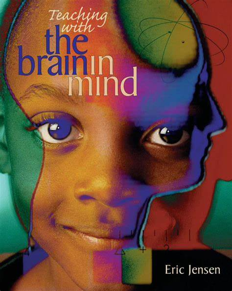

Apply our recommended tips and explore our recommended books
Tips
Incorporating real-world examples into teaching can make STEM subjects more relatable and engaging for students. Teachers can use anecdotes, personal experiences, and current events to illustrate abstract concepts and demonstrate their practical applications.
Recognize and accommodate diverse learning styles and abilities within the classroom. Teachers should employ a variety of instructional methods, such as hands-on activities, group work, and multimedia resources, to cater to different learning preferences and enhance student comprehension.
Embrace educational technology and multimedia resources to enrich student engagement and understanding of STEM concepts. Integrating tools like artificial intelligence, multimedia presentations, and interactive apps can make lessons more dynamic and interactive.
Teachers should be prepared to address challenges such as student disengagement and resource constraints creatively. Strategies like infusing humor into lessons, facilitating peer collaboration, and minimizing reliance on digital devices can help overcome these obstacles and create a positive learning environment.
Recognize and address the digital divide among students by providing alternative learning resources and flexible assessment options. Teachers can facilitate gadget sharing during discussions and minimize activities that heavily rely on digital tools to ensure inclusivity and accessibility for all students.
Stay updated on educational trends and innovations, and continuously seek opportunities for professional development. Teachers should actively engage in training programs, workshops, and conferences to enhance their teaching skills and stay abreast of the latest advancements in STEM education.
Books
"Teach Like a Champion 2.0: 62 Techniques that Put
Students on the Path to College" by Doug Lemov
"How Learning Works: Seven Research-Based Principles
for Smart Teaching" by Susan A. Ambrose, et al.
"The Skillful Teacher: Building Your Teaching Skills"
by Stephen D. Brookfield and Stephen Preskill
"The First Days of School: How to Be an Effective
Teacher" by Harry K. Wong and Rosemary T. Wong
"Understanding by Design" by Grant Wiggins and Jay McTighe
"Visible Learning for Teachers: Maximizing Impact
on Learning" by John Hattie
"The Differentiated Classroom: Responding to the
Needs of All Learners" by Carol Ann Tomlinson

"Teaching with the Brain in Mind" by Eric Jensen
"Learner-Centered Teaching: Putting the Research
on Learning into Practice" by Terry Doyle